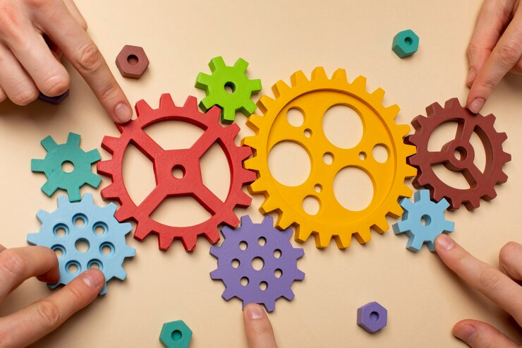

Design de Animação
Design de animação é basicamente dar vida a uma imagem, um desenho, uma ideia, um personagem, fazê-lo se mover, falar e expressar algo.Desenhos, filmes, séries e jogos são exemplos dessa área de imensa criação e criatividade onde se pode contar histórias, transmitir notícias e opiniões. Além de ter variados tipos de animações como Stop Motion, 2D, 3D, Motion Graphics e variadas técnicas para efeitos sonoros, especiarias, softwares. Cada vez mais com o avanço tecnológico, a área de animação também cresce e se adapta para uma melhor experiência tanto para a produção quanto para o resultado de algo satisfatório.

O que se estuda dentro de Design de Animação
UC de Audiovisual
O próprio nome já diz, áudio e vídeo, essa área está inserida em tudo, filmes, vídeos, documentários, propaganda, animações.No audiovisual se aprende a produzir, dirigir, criar um roteiro, editar vídeos, criar e aplicar efeitos especiais e sonoros,além de marketing, tópicos importantes para a animação também.
UC de Meios de Representação
É inserida em várias disciplinas e na animação não é diferente, nela se estuda a semiótica para saber os signos e símbolos e como usá-los em determinadas áreas, linguagem visual, como os princípios do design, cores, layout, narrativa visual para transmitir informações mídia e comunicação, ética e representação para representar variados grupos e culturas e entre outras.
Ana Luiza Reis // Carolina de Oliveira do Nacimento // Gabrielle Christinne Coleho Silva // Taina Rocha de Carvalho

2023